编写日期：2016-11-2
课 题 | MES新系统更改数据教程 | 编者 | 谢钧 | |||||||
类 别 | ○工艺 ○质量 ○设备 ○安全 ○成本 ○现场 ●其他 | |||||||||
部门/车间 | 制丝车间 | 班组 | 加香组 | 岗位 | 中控工 | |||||
内
容 | 近段时间新系统的上线，我们更正数据后仍然发现系统报错。这是由于，我们实际的操作只是更正了一个区域的数据，之前发生错误的数据已经被其他区域接收。例如，南区打包出柜输入错误，我们改正了南区的数据，但是第一次输入错误的数据已经发送到装箱间。所以例子中南区录入数据的人员，更正数据的时候要连同装箱间的数据一起改正，系统才不会报错。
例如：双喜（经典）10116需要更正 步骤如下： 一、在成品烟丝收发存管理中，开始时间与结束时间的范围适当选择大些。区域选择“全部”。如下图1。选择“查询”。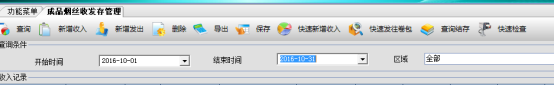 图 1 二、点击牌号和批次右边的漏斗，在筛选中选择对应的牌号，批次。
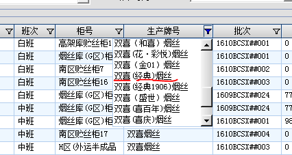
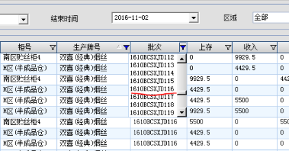 这样我们可以观察到该批次从生产收入到发出的全部记录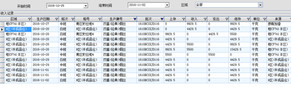 实际生产记录表为：28日早班发出4429.5kg，中班发出5500kg 对比发现上面的主要问题为： 1、28日早班E区发出记录异常。H区半成品仓早班收入该批次的烟4429.5kg，E区在中班才发出。 2、28日中班更正了本区域的错误，但忽略了其他区域的错误。28日中班E区发出一次5500kg，但是H区半成品仓收入了两次5500kg。
三、选中错误的记录，点击删除按钮。（注意：按Delete按键无法删除记录）删除后可点击“查询确认是否已经删除成功。 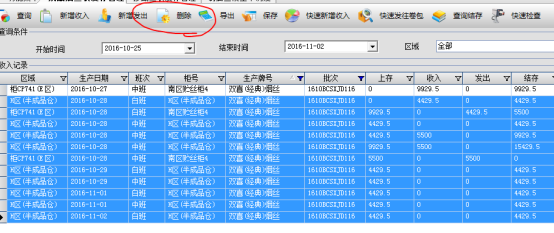 四、重新输入正确的发出记录（由于卷接包和H区半成品仓等区域是自动收入，因此只需要将这些错误的数据删除，在原来发出的区域重新输入正确的发出记录，这些收入数据就正确） 1、点击快速新增收入，选择正确的日期，班次，区域。 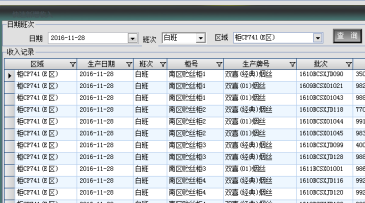 2、将27日中班的双喜（经典）10116收入到28日早班。 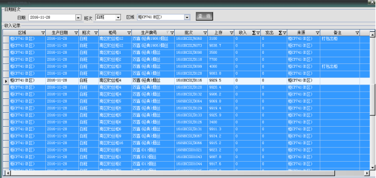 在快速新增收入的界面选中不是双喜（经典）10116批次的烟，点击键盘Delete按钮，删除其他记录。（由于当班的其他烟之前已经收入过，防止重复收入。） 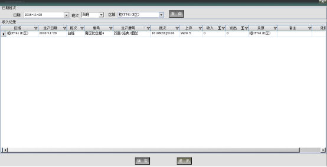 可见只剩下我们需要的批次双喜（经典）10116，点击确定将其收入。点击查询可看到如下：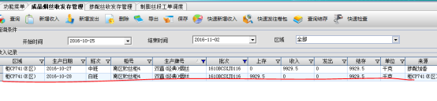 3、根据实际生产记录将其发出。 由于28日早班记录有4429.5kg打包出柜。选中28日早班该批次，点击“新增发出”。填入正确的去向，发出数量。如下图所示： 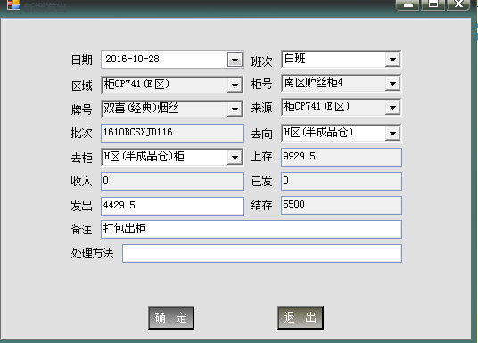 点击确定，出现如下两条记录，一是E区发出了4429.5kg，二是H区半成品仓收入了4429.5kg。 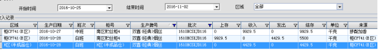 同上，我们输入28日中班正确的记录。可见所有的数据结存都正常。 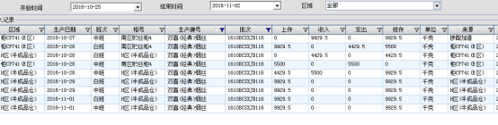
备注：由于现今用“快速发往卷接包”功能，卷接包有收入，无结存。用“新增发出”到卷接包，卷接包有收入，有结存。所以建议同一批烟用同一种发出功能。 | |||||||||
课程 审核意见 | 适合培训岗位 | 贮丝柜 | 培训方式 | ■面授 ■传阅 ○观看视频 | ||||||
讲师 |
| 培训日期 |
| |||||||
适用性较强，可用于新员工、转岗/复岗员工的上岗前培训。 | ||||||||||